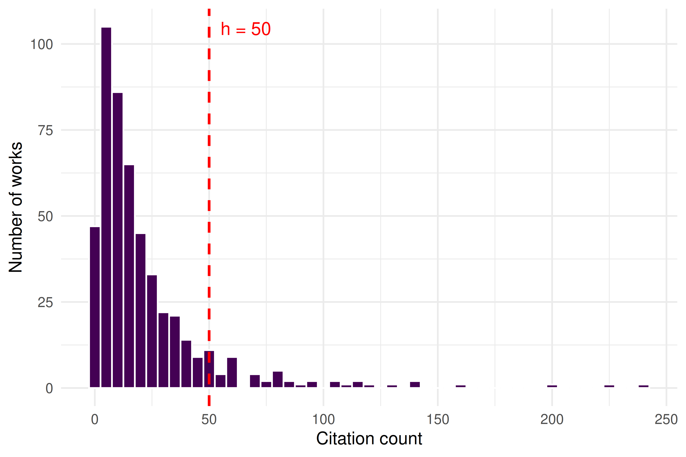
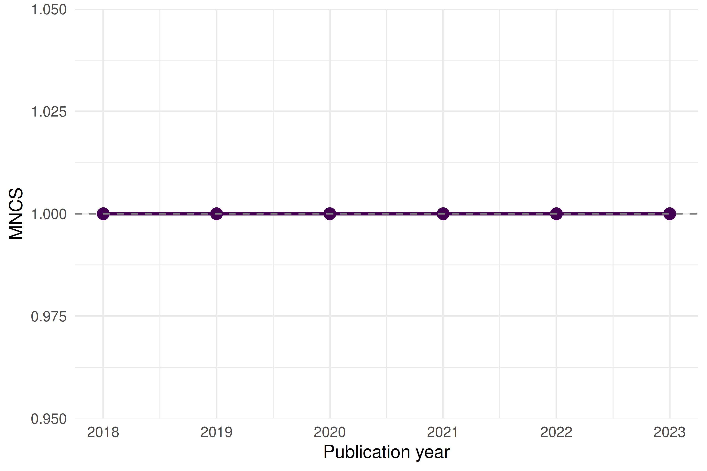

11 Productivity and Impact Indicators
11.1 Learning objectives
After completing this chapter, you will be able to:
- Compute the h-index, g-index, and m-quotient from a vector of citation counts
- Explain the difference between size-dependent and size-independent indicators
- Calculate field-normalized indicators (MNCS, PP(top 10%)) and explain why normalization matters
- Articulate the limitations of each indicator and the risks of misuse, citing the Leiden Manifesto
11.3 Conceptual background
Quantitative indicators are central to research evaluation — and among the most contested tools in science policy. The h-index, proposed by Hirsch (2005), counts the number h of an author’s papers that have each received at least h citations. Its simplicity made it wildly popular, but also obscures important nuances: it conflates productivity with impact, is insensitive to highly cited papers, and can only increase over a career (Waltman 2016).
The g-index (Egghe 2006) addresses the insensitivity to top-cited papers by requiring that the top g papers have together received at least g² citations. The m-quotient divides the h-index by career length, offering a rough age correction.
These are all raw indicators. Comparing them across fields is meaningless without field normalization. A citation count of 50 is exceptional in mathematics but ordinary in biomedical research. The Mean Normalized Citation Score (MNCS) divides each paper’s citations by the world average for its field and publication year (Waltman et al. 2011). The PP(top 10%) — the proportion of an entity’s papers in the top 10% most cited in their field — is a percentile-based indicator recommended by the Leiden Ranking.
The Leiden Manifesto (Hicks et al. 2015) and the San Francisco Declaration on Research Assessment (American Society for Cell Biology 2012) both caution against mechanical use of any single indicator. Indicators should support, not replace, qualitative judgement.
11.4 Worked example
11.4.1 Acquiring sample data
We fetch a sample of works and their citation counts from OpenAlex.
works <- oa_fetch(
entity = "works",
primary_location.source.id = "S148561398",
from_publication_date = "2018-01-01",
to_publication_date = "2023-12-31",
options = list(sample = 500, seed = 42)
)
works_slim <- works |>
select(id, display_name, publication_date, cited_by_count, doi) |>
mutate(year = year(publication_date))
summary(works_slim$cited_by_count)#> Min. 1st Qu. Median Mean 3rd Qu. Max.
#> 0 5 13 23 26 66911.4.2 Computing the h-index
#> h-index for this corpus: 47The h-index tells us that {h} papers in this sample have each been cited at least {h} times.
11.4.3 Computing the g-index
compute_g_index <- function(citations) {
sorted <- sort(citations, decreasing = TRUE)
cumsum_cites <- cumsum(sorted)
g_candidates <- which(cumsum_cites >= seq_along(sorted)^2)
if (length(g_candidates) == 0) return(0L)
as.integer(max(g_candidates))
}
g <- compute_g_index(works_slim$cited_by_count)
cat(glue("g-index for this corpus: {g}\n"))#> g-index for this corpus: 8111.4.4 The m-quotient
The m-quotient normalizes the h-index by career length (here, publication span).
career_years <- as.numeric(
difftime(max(works_slim$publication_date),
min(works_slim$publication_date),
units = "days")
) / 365.25
m_quotient <- h / career_years
cat(glue("m-quotient: {round(m_quotient, 3)} (over {round(career_years, 1)} years)\n"))#> m-quotient: 7.857 (over 6 years)11.4.5 Field-normalized indicators: MNCS
To compute MNCS, we need field averages. We simulate field means here; in a real analysis these would come from the OpenAlex snapshot or a reference dataset.
field_means_by_year <- works_slim |>
group_by(year) |>
summarise(field_mean = mean(cited_by_count), .groups = "drop")
works_normalized <- works_slim |>
left_join(field_means_by_year, by = "year") |>
mutate(ncs = field_normalize(cited_by_count, field_mean))
mncs <- mean(works_normalized$ncs, na.rm = TRUE)
cat(glue("MNCS: {round(mncs, 3)}\n"))#> MNCS: 1An MNCS of 1.0 means the entity performs at exactly the world average. Values above 1.0 indicate above-average citation impact.
11.4.6 PP(top 10%)
works_with_pct <- works_normalized |>
group_by(year) |>
mutate(
pct_rank = percent_rank(cited_by_count),
is_top10 = pct_rank >= 0.90
) |>
ungroup()
pp_top10 <- mean(works_with_pct$is_top10)
cat(glue("PP(top 10%): {scales::percent(pp_top10, accuracy = 0.1)}\n"))#> PP(top 10%): 10.2%11.4.7 Visualization
works_slim |>
ggplot(aes(x = cited_by_count)) +
geom_histogram(binwidth = 5, fill = palette_sci(1), color = "white") +
geom_vline(xintercept = h, linetype = "dashed", color = "red", linewidth = 0.8) +
annotate("text", x = h + 5, y = Inf, label = glue("h = {h}"),
vjust = 2, hjust = 0, color = "red", size = 4) +
labs(x = "Citation count", y = "Number of works") +
theme_sci()
Figure 11.1: Citation distribution of sampled works, with the h-index threshold marked.
works_normalized |>
group_by(year) |>
summarise(mncs = mean(ncs, na.rm = TRUE), .groups = "drop") |>
ggplot(aes(x = year, y = mncs)) +
geom_line(color = palette_sci(1), linewidth = 1) +
geom_point(color = palette_sci(1), size = 3) +
geom_hline(yintercept = 1, linetype = "dashed", color = "grey50") +
labs(x = "Publication year", y = "MNCS") +
theme_sci()
Figure 11.2: Mean Normalized Citation Score by publication year.
11.4.8 Summary table
tibble(
Indicator = c("h-index", "g-index", "m-quotient", "MNCS", "PP(top 10%)"),
Value = c(
as.character(h),
as.character(g),
round(m_quotient, 3) |> as.character(),
round(mncs, 3) |> as.character(),
scales::percent(pp_top10, accuracy = 0.1)
),
Interpretation = c(
glue("{h} papers with >= {h} citations each"),
glue("Top {g} papers have >= {g}^2 = {g^2} cumulative citations"),
glue("h-index per year of publication activity"),
glue("{ifelse(mncs > 1, 'Above', 'Below')} world average"),
glue("{scales::percent(pp_top10, accuracy = 0.1)} of papers in the top decile")
)
) |>
gt()| Indicator | Value | Interpretation |
|---|---|---|
| h-index | 47 | 47 papers with >= 47 citations each |
| g-index | 81 | Top 81 papers have >= 81^2 = 6561 cumulative citations |
| m-quotient | 7.857 | h-index per year of publication activity |
| MNCS | 1 | Below world average |
| PP(top 10%) | 10.2% | 10.2% of papers in the top decile |
11.5 Diagnostics and interpretation
When interpreting bibliometric indicators, keep in mind:
- Citation windows matter. Recent papers have had less time to accumulate citations. The MNCS accounts for this by normalizing within publication year, but raw h-index and g-index do not.
- Field differences. A “good” h-index in mathematics differs vastly from one in biomedicine. Only compare within fields, or use field-normalized indicators.
- Size dependence. The h-index grows with the number of papers published. Comparing researchers at different career stages or with different publication rates requires the m-quotient or percentile indicators.
- Self-citations. None of the indicators above exclude self-citations. In a full analysis, consider computing variants with and without self-citations.
11.7 Limitations and responsible use
No single number can capture the quality, significance, or societal impact of a researcher’s work. The Leiden Manifesto (Hicks et al. 2015) offers ten principles for the responsible use of metrics:
- Quantitative evaluation should support, not replace, expert assessment.
- Measure performance against the research missions of the institution, group, or researcher.
- Protect excellence in locally relevant research (not just globally visible research).
- Keep data collection and analytical processes open, transparent, and simple.
- Allow those being evaluated to verify data and analysis.
The h-index in particular can be gamed through self-citation, salami slicing, or guest authorship. It penalises researchers in small fields, those who publish fewer but higher-impact works, and those who take career breaks. The DORA declaration (American Society for Cell Biology 2012) explicitly warns against using journal-level metrics (like the Impact Factor) as surrogates for individual article quality — but the same caution applies to any single indicator.
Always present multiple indicators alongside qualitative context. Never use a single number to make hiring, promotion, or funding decisions.
11.9 Common pitfalls
- Comparing h-indices across fields. A physicist with h = 40 and a mathematician with h = 15 may have equivalent standing in their respective fields. Use field-normalized indicators for cross-field comparisons.
- Ignoring the citation window. Computing MNCS without accounting for publication year conflates old, well-cited papers with recent ones that haven’t had time to accumulate citations.
- Using the wrong denominator for PP(top 10%). The “top 10%” must be defined relative to the same field and year, not relative to your own corpus.
- Reporting precision that isn’t there. An MNCS of 1.237 vs. 1.241 is not a meaningful difference. Report with appropriate precision and always provide confidence intervals or bootstrapped uncertainty where possible.
11.10 Exercises
Career h-index. Fetch all works by a specific author using
oa_fetch(entity = "works", author.id = "..."). Compute their h-index, g-index, and m-quotient. How do the three indicators tell different stories about the same career?Self-citation sensitivity. If you could identify self-citations (e.g., via author overlap in the reference list), how would removing them affect the h-index? Write pseudocode for this analysis.
Bootstrap uncertainty for MNCS. Use
replicate()andsample()to compute a 95% confidence interval for the MNCS of your sample. How wide is the interval?PP(top 10%) vs. MNCS. For the sample data, plot PP(top 10%) against MNCS by year. Do they always agree on which years performed best?
11.11 Solutions
Solutions are provided in 2.11.
11.12 Further reading
- Hirsch (2005) — The original h-index paper.
- Egghe (2006) — The g-index, addressing the h-index’s insensitivity to highly cited papers.
- Waltman (2016) — A comprehensive review of citation impact indicators and their properties.
- Waltman et al. (2011) — The theoretical basis for the MNCS (“new crown indicator”).
- Hicks et al. (2015) — The Leiden Manifesto: ten principles for responsible metrics.
- American Society for Cell Biology (2012) — DORA: the San Francisco Declaration on Research Assessment.
11.13 Session info
#> R version 4.4.1 (2024-06-14)
#> Platform: x86_64-pc-linux-gnu
#> Running under: Ubuntu 24.04.4 LTS
#>
#> Matrix products: default
#> BLAS: /usr/lib/x86_64-linux-gnu/openblas-pthread/libblas.so.3
#> LAPACK: /usr/lib/x86_64-linux-gnu/openblas-pthread/libopenblasp-r0.3.26.so; LAPACK version 3.12.0
#>
#> locale:
#> [1] LC_CTYPE=C.UTF-8 LC_NUMERIC=C LC_TIME=C.UTF-8 LC_COLLATE=C.UTF-8 LC_MONETARY=C.UTF-8
#> [6] LC_MESSAGES=C.UTF-8 LC_PAPER=C.UTF-8 LC_NAME=C LC_ADDRESS=C LC_TELEPHONE=C
#> [11] LC_MEASUREMENT=C.UTF-8 LC_IDENTIFICATION=C
#>
#> time zone: UTC
#> tzcode source: system (glibc)
#>
#> attached base packages:
#> [1] stats graphics grDevices utils datasets methods base
#>
#> other attached packages:
#> [1] quanteda_4.4 pdftools_3.8.0 arrow_24.0.0 bibliometrix_5.3.0 RefManageR_1.4.0 bib2df_1.1.2.0
#> [7] rcrossref_1.2.1 gt_1.3.0 tidytext_0.4.3 glue_1.8.1 openalexR_3.0.1 lubridate_1.9.5
#> [13] forcats_1.0.1 stringr_1.6.0 dplyr_1.2.1 purrr_1.2.2 readr_2.2.0 tidyr_1.3.2
#> [19] tibble_3.3.1 ggplot2_4.0.3 tidyverse_2.0.0
#>
#> loaded via a namespace (and not attached):
#> [1] bibtex_0.5.2 RColorBrewer_1.1-3 rstudioapi_0.18.0 jsonlite_2.0.0 magrittr_2.0.5
#> [6] farver_2.1.2 rmarkdown_2.31 fs_2.1.0 vctrs_0.7.3 memoise_2.0.1
#> [11] askpass_1.2.1 base64enc_0.1-6 htmltools_0.5.9 contentanalysis_1.0.0 curl_7.1.0
#> [16] janeaustenr_1.0.0 cellranger_1.1.0 sass_0.4.10 bslib_0.10.0 htmlwidgets_1.6.4
#> [21] tokenizers_0.3.0 plyr_1.8.9 httr2_1.2.2 plotly_4.12.0 cachem_1.1.0
#> [26] dimensionsR_0.0.3 igraph_2.3.1 mime_0.13 lifecycle_1.0.5 pkgconfig_2.0.3
#> [31] Matrix_1.7-0 R6_2.6.1 fastmap_1.2.0 shiny_1.13.0 digest_0.6.39
#> [36] shinycssloaders_1.1.0 rprojroot_2.1.1 SnowballC_0.7.1 labeling_0.4.3 urltools_1.7.3.1
#> [41] timechange_0.4.0 httr_1.4.8 compiler_4.4.1 here_1.0.2 bit64_4.8.0
#> [46] withr_3.0.2 S7_0.2.2 backports_1.5.1 viridis_0.6.5 rappdirs_0.3.4
#> [51] bibliometrixData_0.3.0 tools_4.4.1 otel_0.2.0 stopwords_2.3 zip_2.3.3
#> [56] httpuv_1.6.17 rentrez_1.2.4 promises_1.5.0 grid_4.4.1 stringdist_0.9.17
#> [61] generics_0.1.4 gtable_0.3.6 tzdb_0.5.0 rscopus_0.9.0 ca_0.71.1
#> [66] data.table_1.18.4 hms_1.1.4 xml2_1.5.2 utf8_1.2.6 ggrepel_0.9.8
#> [71] pillar_1.11.1 later_1.4.8 brand.yml_0.1.0 lattice_0.22-6 bit_4.6.0
#> [76] tidyselect_1.2.1 miniUI_0.1.2 downlit_0.4.5 knitr_1.51 gridExtra_2.3
#> [81] bookdown_0.46 crul_1.6.0 xfun_0.57 DT_0.34.0 humaniformat_0.6.0
#> [86] visNetwork_2.1.4 stringi_1.8.7 lazyeval_0.2.3 qpdf_1.4.1 yaml_2.3.12
#> [91] evaluate_1.0.5 codetools_0.2-20 httpcode_0.3.0 cli_3.6.6 xtable_1.8-8
#> [96] jquerylib_0.1.4 dichromat_2.0-0.1 Rcpp_1.1.1-1.1 readxl_1.4.5 triebeard_0.4.1
#> [101] XML_3.99-0.23 parallel_4.4.1 assertthat_0.2.1 pubmedR_1.0.2 viridisLite_0.4.3
#> [106] scales_1.4.0 openxlsx_4.2.8.1 rlang_1.2.0 fastmatch_1.1-8